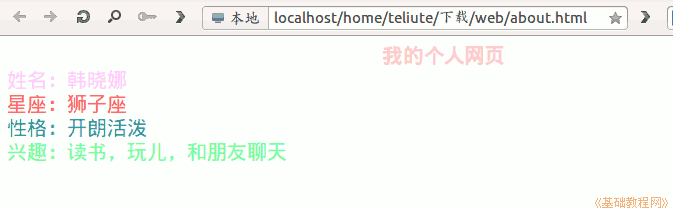

2011-2012 第二学期九年级系统安装教学设计
作者：TeliuTe 来源：基础教程网
十一、制作个人简介 返回目录 下一课
（一）教学设计
1、学习目标：制作个人简介
2、注意事项：保存为英文文件名，小数点别弄丢了
3、教学过程：
1）教师准备学案和板书；
2）学生整队进入，开机抄黑板上笔记；
3）教师讲解板书演示操作；
4）学生打指法、日志、完成操作；
5）教师打勾记录学生指法成绩，检查日志和操作；
注：学生抄完笔记就开始打指法、日志，老师讲完后再继续完成；
（二）板书设计(学生笔记)
第11课 制作个人简介
1、打开 9-1，新建文件夹，英文 web
2、打开kompozer，运行，格式、页面标题和属性
3、保存为 about
4、输入内容：姓名、昵称、兴趣、爱好、特长、个人介绍、性格、星座、血型。。。
5、修饰颜色、字体、字号
操作图示：

（三）课后记 2012-4-28 21:02
没想到是补昨天的课，这样九年级接着上
没老师来要课，语文老师来换节课
--
等学生要来了才知道是要上课
好在昨天已经布置了今天的学习内容
--
依然是简单的内容，只是要做成网页
设计了一些具体的项目，像兴趣、爱好、特长
--
新知识点就是设置页面属性，和修饰内容
不过做出来看着还是非常的简单
--
不能指望着能学多少知识，打打基础就可以了
把一些常见的网页中的元素能够识别出来
--
比赛一部分回来，召集到一个机子跟前
再讲一遍也挺快的，一节课没学多少
--
下午只上两节课，这样有一个班缺一节
不能等，谁知道下一节课还能不能上
--
统一一下好讲课，都建成web文件夹
上次的kompozer应该让建到9-1里头
--
先对着黑板过一下，把容易出错的英文文件名和保存文件夹红笔画线
最后检查的时候还是有很多用中文的，以及存到9-1里了没存到web
--
在nautilus打开会提示编辑还是运行，在pcmanfm里可以直接运行
下次装机的时候把这个安装进去也可以，或者查查是怎么直接运行的
--
把火狐普通上传的问题解决了，原来是不支持一个item
不过在另一个IE上却无法上传rar压缩文件，下回再试试
--
返回目录 下一课
本教程由86团学校TeliuTe制作|著作权所有
基础教程网：http://teliute.org/
美丽的校园……
转载和引用本站内容，请保留版权信息和本站链接。